Aplikasi mobile modern jarang menyimpan seluruh datanya di dalam kode. Data biasanya diambil dari server melalui REST API menggunakan protokol HTTP, dengan method GET untuk mengambil data, POST untuk menambah data, PUT untuk mengubah data, dan DELETE untuk menghapus data. Server mengirim data dalam format JSON, yang di Dart dibaca dengan jsonDecode menjadi Map lalu diubah menjadi objek model melalui factory fromJson.
Karena permintaan ke server membutuhkan waktu, prosesnya berjalan secara asinkron menggunakan Future dan async/await. Hasilnya ditampilkan dengan FutureBuilder yang memiliki tiga kondisi: loading, error, dan data. Pada praktikum ini, data dummy pada project ResepKu dihapus dan seluruh resep diambil dari https://dummyjson.com/recipes. Komunikasi dengan server dipusatkan dalam satu class RecipeService yang didaftarkan melalui Provider, ditambah tombol "Coba lagi", pull-to-refresh, serta form untuk mengirim resep baru dengan request POST. Perlu diperhatikan bahwa POST, PUT, dan DELETE pada dummyjson hanya simulasi, sehingga data di server sebenarnya tidak berubah.
fromJson untuk model Recipe.GET dengan package http di dalam sebuah class service.FutureBuilder lengkap dengan loading state, error state, tombol coba lagi, dan pull-to-refresh.POST dari sebuah form, lalu menangani hasilnya.resepku dari Praktikum 7dummyjson.com/docs/recipeshttpSebelum membuat kode, struktur data dari server diamati terlebih dahulu dengan membuka https://dummyjson.com/recipes?limit=2 di browser. Objek terluar memiliki key recipes yang berisi array resep, ditambah total, skip, dan limit. Setiap elemen array adalah satu resep. Hasil pengamatan dicatat pada tabel berikut.
| Pertanyaan | Jawaban |
|---|---|
Nilai total |
50 |
| Key yang berisi daftar resep | recipes |
Tipe nilai rating pada resep pertama (int atau double?) |
double (nilainya 4.6) |
Tiga key resep yang belum ada di model Recipe Praktikum 7 |
instructions, tags, dan reviewCount (key lain yang juga belum ada: userId dan mealType) |
Package http dipasang dengan perintah berikut yang menambahkan baris http ke dependencies di pubspec.yaml sekaligus mengunduhnya.
flutter pub add httpIsi lib/models/recipe.dart kemudian diganti. Ada dua perubahan: ditambahkan field baru instructions (langkah memasak) dan factory Recipe.fromJson. Setelah itu file lib/data/dummy_recipes.dart beserta folder data dihapus. Editor akan menampilkan error pada home_page.dart karena dummyRecipes tidak ada lagi, dan error ini hilang setelah HomePage diubah pada langkah 6.
class Recipe {
final int id;
final String name;
final String cuisine;
final String difficulty;
final int prepTimeMinutes;
final int cookTimeMinutes;
final int servings;
final int caloriesPerServing;
final double rating;
final String image; // URL foto resep
final List<String> ingredients;
final List<String> instructions;
const Recipe({
required this.id,
required this.name,
required this.cuisine,
required this.difficulty,
required this.prepTimeMinutes,
required this.cookTimeMinutes,
required this.servings,
required this.caloriesPerServing,
required this.rating,
required this.image,
required this.ingredients,
this.instructions = const [],
});
int get totalTimeMinutes => prepTimeMinutes + cookTimeMinutes;
/// Membuat Recipe dari satu objek JSON (Map hasil jsonDecode).
/// Field yang tidak ada di JSON diberi nilai bawaan agar aplikasi tidak crash.
factory Recipe.fromJson(Map<String, dynamic> json) {
return Recipe(
id: json['id'] as int,
name: json['name'] as String,
cuisine: json['cuisine'] as String? ?? '-',
difficulty: json['difficulty'] as String? ?? '-',
prepTimeMinutes: json['prepTimeMinutes'] as int? ?? 0,
cookTimeMinutes: json['cookTimeMinutes'] as int? ?? 0,
servings: json['servings'] as int? ?? 1,
caloriesPerServing: json['caloriesPerServing'] as int? ?? 0,
// JSON tidak membedakan 4 dan 4.0: ambil sebagai num lalu ubah ke double
rating: (json['rating'] as num? ?? 0).toDouble(),
image: json['image'] as String? ?? '',
ingredients: List<String>.from(json['ingredients'] as List? ?? const []),
instructions: List<String>.from(json['instructions'] as List? ?? const []),
);
}
}factory Recipe.fromJson — Konstruktor yang membuat Recipe dari satu objek JSON (Map hasil jsonDecode).json['id'] as int — Mengambil nilai dengan key yang sama persis dengan JSON, lalu cast ke tipe yang diharapkan.as String? ?? '-' — Untuk field opsional. Jika key tidak ada, dipakai nilai bawaan agar aplikasi tidak crash. Hal ini dibutuhkan pada request POST karena respons hanya berisi sebagian field.as num ... toDouble() — JSON tidak membedakan 5 dan 5.0, sehingga rating 5 terbaca sebagai int dan as double akan gagal. Karena itu diambil sebagai num lalu diubah ke double.List<String>.from — Array JSON terbaca sebagai List<dynamic> sehingga diubah menjadi List<String>.this.instructions = const [] — Parameter opsional dengan nilai bawaan, sehingga kode lama yang tidak mengisinya tetap berjalan.Semua komunikasi dengan server diletakkan dalam satu class RecipeService pada folder baru lib/services, sehingga widget tidak memanggil http secara langsung. Method fetchRecipes membuat Uri ke /recipes?limit=50, mengirim request GET, memeriksa status code, lalu mengubah isi key recipes menjadi List<Recipe> menggunakan Recipe.fromJson.
import 'dart:convert';
import 'package:http/http.dart' as http;
import 'package:resepku/models/recipe.dart';
/// Semua komunikasi ResepKu dengan REST API dummyjson.com ada di class ini.
/// Widget tidak memanggil http secara langsung.
class RecipeService {
RecipeService({http.Client? client}) : _client = client ?? http.Client();
final http.Client _client;
static const _baseUrl = 'https://dummyjson.com';
static const _timeout = Duration(seconds: 10);
/// GET /recipes?limit=50 — mengambil daftar resep.
Future<List<Recipe>> fetchRecipes({int limit = 50}) async {
final uri = Uri.parse('$_baseUrl/recipes?limit=$limit');
final response = await _client.get(uri).timeout(_timeout);
_checkStatus(response);
final body = jsonDecode(response.body) as Map<String, dynamic>;
final list = body['recipes'] as List<dynamic>;
return list
.map((item) => Recipe.fromJson(item as Map<String, dynamic>))
.toList();
}
/// Status 2xx berarti berhasil. Selain itu, lempar exception
/// agar FutureBuilder masuk ke error state.
void _checkStatus(http.Response response) {
if (response.statusCode < 200 || response.statusCode >= 300) {
throw RecipeServiceException(
'Server menjawab dengan status ${response.statusCode}',
);
}
}
void close() => _client.close();
}
class RecipeServiceException implements Exception {
RecipeServiceException(this.message);
final String message;
@override
String toString() => message;
}as http — Semua fungsi package http dipanggil dengan awalan http. agar tidak bentrok dengan nama lain.http.Client? client — Client dapat diganti dari luar. Saat pengujian (Latihan 3), client diganti MockClient sehingga tidak membutuhkan internet..timeout(_timeout) — Jika server tidak menjawab dalam 10 detik, Future gagal dengan TimeoutException sehingga aplikasi tidak menunggu selamanya._checkStatus — Status selain 2xx dilempar sebagai RecipeServiceException agar FutureBuilder masuk ke error state.body['recipes'] — Daftar resep berada di dalam key recipes, sesuai pengamatan pada langkah 1.close() — Menutup koneksi client ketika service tidak dipakai lagi.RecipeService didaftarkan pada MultiProvider di main.dart menggunakan Provider biasa, bukan ChangeNotifierProvider, karena service tidak menyimpan state yang berubah sehingga tidak membutuhkan notifyListeners. Parameter dispose memanggil service.close() ketika provider dilepas. FavoriteProvider dan ThemeProvider tetap didaftarkan, begitu juga fontFamily, themeMode, dan builder untuk footer identitas. Setelah mengubah main.dart wajib dilakukan hot restart, bukan hot reload.
import 'package:flutter/material.dart';
import 'package:provider/provider.dart';
import 'package:resepku/pages/home_page.dart';
import 'package:resepku/providers/favorite_provider.dart';
import 'package:resepku/providers/theme_provider.dart';
import 'package:resepku/services/recipe_service.dart';
import 'package:resepku/widgets/identity_footer.dart';
void main() {
runApp(
MultiProvider(
providers: [
ChangeNotifierProvider(create: (context) => FavoriteProvider()),
ChangeNotifierProvider(create: (context) => ThemeProvider()),
// Provider biasa: RecipeService tidak berubah, jadi tidak perlu notifyListeners
Provider(
create: (context) => RecipeService(),
dispose: (context, service) => service.close(),
),
],
child: const ResepKuApp(),
),
);
}
class ResepKuApp extends StatelessWidget {
const ResepKuApp({super.key});
@override
Widget build(BuildContext context) {
return MaterialApp(
title: 'ResepKu',
debugShowCheckedModeBanner: false,
theme: ThemeData(
colorSchemeSeed: Colors.deepOrange,
fontFamily: 'Poppins', // didaftarkan di pubspec.yaml
),
darkTheme: ThemeData(
colorSchemeSeed: Colors.deepOrange,
brightness: Brightness.dark,
fontFamily: 'Poppins',
),
themeMode: context.watch<ThemeProvider>().themeMode,
builder: (context, child) => IdentityFooter(child: child!), // footer NIM & nama
home: const HomePage(),
);
}
}Widget ErrorView dibuat pada lib/widgets/error_view.dart untuk menampilkan error state dan dapat dipakai di beberapa halaman. Widget menerima message berupa teks error dan onRetry berupa fungsi yang dijalankan ketika tombol "Coba lagi" ditekan. Column dengan mainAxisSize: MainAxisSize.min menyusun ikon Icons.wifi_off, pesan, dan FilledButton.icon di tengah layar.
import 'package:flutter/material.dart';
/// Tampilan error state: pesan dan tombol untuk mencoba lagi.
class ErrorView extends StatelessWidget {
const ErrorView({super.key, required this.message, required this.onRetry});
final String message;
final VoidCallback onRetry;
@override
Widget build(BuildContext context) {
return Center(
child: Padding(
padding: const EdgeInsets.all(24),
child: Column(
mainAxisSize: MainAxisSize.min,
children: [
const Icon(Icons.wifi_off, size: 48),
const SizedBox(height: 12),
Text(message, textAlign: TextAlign.center),
const SizedBox(height: 16),
FilledButton.icon(
onPressed: onRetry,
icon: const Icon(Icons.refresh),
label: const Text('Coba lagi'),
),
],
),
),
);
}
}Isi home_page.dart diganti sehingga data diambil dari server melalui FutureBuilder<List<Recipe>>. Future disimpan pada variabel _recipesFuture dan dibuat satu kali di initState menggunakan context.read<RecipeService>().fetchRecipes(). Filter cuisine dari Praktikum 7 tetap dipertahankan, tetapi daftar cuisine kini diambil dari data hasil server (variabel allRecipes), bukan dari dummyRecipes.
import 'package:flutter/material.dart';
import 'package:provider/provider.dart';
import 'package:resepku/models/recipe.dart';
import 'package:resepku/pages/settings_page.dart';
import 'package:resepku/services/recipe_service.dart';
import 'package:resepku/widgets/error_view.dart';
import 'package:resepku/widgets/favorite_badge_button.dart';
import 'package:resepku/widgets/recipe_grid_card.dart';
import 'package:resepku/widgets/recipe_tile.dart';
class HomePage extends StatefulWidget {
const HomePage({super.key});
@override
State<HomePage> createState() => _HomePageState();
}
class _HomePageState extends State<HomePage> {
bool _isGrid = false;
String? _cuisine; // null = semua cuisine (filter dari Praktikum 7)
late Future<List<Recipe>> _recipesFuture;
@override
void initState() {
super.initState();
// Future dibuat SEKALI di initState, bukan di build()
_recipesFuture = context.read<RecipeService>().fetchRecipes();
}
// Membuat Future baru, lalu setState agar FutureBuilder memakainya
void _reload() {
setState(() {
_recipesFuture = context.read<RecipeService>().fetchRecipes();
});
}
// Dipanggil RefreshIndicator saat daftar ditarik ke bawah
Future<void> _refresh() async {
_reload();
try {
await _recipesFuture;
} catch (_) {
// error sudah ditampilkan oleh FutureBuilder
}
}
@override
Widget build(BuildContext context) {
return Scaffold(
appBar: AppBar(
title: Row(
children: [
Image.asset('assets/images/logo.png', height: 32),
const SizedBox(width: 8),
const Text('ResepKu'),
],
),
actions: [
IconButton(
tooltip: _isGrid ? 'Tampilan list' : 'Tampilan grid',
icon: Icon(_isGrid ? Icons.view_list : Icons.grid_view),
onPressed: () => setState(() => _isGrid = !_isGrid),
),
IconButton(
tooltip: 'Pengaturan',
icon: const Icon(Icons.settings),
onPressed: () => Navigator.push(
context,
MaterialPageRoute(builder: (context) => const SettingsPage()),
),
),
const FavoriteBadgeButton(),
],
),
body: FutureBuilder<List<Recipe>>(
future: _recipesFuture,
builder: (context, snapshot) {
// 1. Loading state (data lama tetap tampil saat refresh)
if (snapshot.connectionState == ConnectionState.waiting &&
!snapshot.hasData) {
return const Center(child: CircularProgressIndicator());
}
// 2. Error state
if (snapshot.hasError) {
return ErrorView(
message: 'Gagal memuat resep.\n${snapshot.error}',
onRetry: _reload,
);
}
// 3. Data state
final allRecipes = snapshot.data ?? [];
if (allRecipes.isEmpty) {
return const Center(child: Text('Belum ada resep.'));
}
// Daftar cuisine diambil dari data hasil server, bukan dummyRecipes
final cuisines = allRecipes.map((r) => r.cuisine).toSet().toList();
final recipes = _cuisine == null
? allRecipes
: allRecipes.where((r) => r.cuisine == _cuisine).toList();
return Column(
children: [
SizedBox(
height: 56,
child: ListView(
scrollDirection: Axis.horizontal,
padding:
const EdgeInsets.symmetric(horizontal: 8, vertical: 8),
children: [
Padding(
padding: const EdgeInsets.only(right: 8),
child: ChoiceChip(
label: const Text('Semua'),
selected: _cuisine == null,
onSelected: (_) => setState(() => _cuisine = null),
),
),
for (final cuisine in cuisines)
Padding(
padding: const EdgeInsets.only(right: 8),
child: ChoiceChip(
label: Text(cuisine),
selected: _cuisine == cuisine,
onSelected: (_) =>
setState(() => _cuisine = cuisine),
),
),
],
),
),
Expanded(
child: RefreshIndicator(
onRefresh: _refresh,
child: _isGrid ? _buildGrid(recipes) : _buildList(recipes),
),
),
],
);
},
),
);
}
Widget _buildList(List<Recipe> recipes) {
return ListView.builder(
// agar pull-to-refresh tetap bisa dipakai walaupun daftar pendek
physics: const AlwaysScrollableScrollPhysics(),
itemCount: recipes.length,
itemBuilder: (context, index) => RecipeTile(recipe: recipes[index]),
);
}
Widget _buildGrid(List<Recipe> recipes) {
return GridView.builder(
physics: const AlwaysScrollableScrollPhysics(),
padding: const EdgeInsets.all(8),
gridDelegate: const SliverGridDelegateWithFixedCrossAxisCount(
crossAxisCount: 2,
mainAxisSpacing: 8,
crossAxisSpacing: 8,
childAspectRatio: 3 / 4, // lebar : tinggi
),
itemCount: recipes.length,
itemBuilder: (context, index) => RecipeGridCard(recipe: recipes[index]),
);
}
}initState — Future dibuat satu kali di sini. context.read boleh dipakai di initState karena tidak mendengarkan perubahan._reload() — Membuat Future baru di dalam setState. Dipakai tombol "Coba lagi" dan pull-to-refresh.waiting && !hasData — Indikator loading hanya tampil jika belum ada data, sehingga saat refresh daftar lama tetap terlihat.hasError — Diperiksa sebelum data dan ditampilkan dengan ErrorView.RefreshIndicator — Tarik daftar ke bawah untuk memuat ulang. onRefresh harus mengembalikan Future.AlwaysScrollableScrollPhysics — Agar pull-to-refresh tetap bisa dipakai walaupun daftar pendek (misalnya setelah filter cuisine)._buildList(recipes) dan _buildGrid(recipes) — Kini menerima data sebagai parameter, bukan membaca dummyRecipes.Future tidak dibuat di dalam build() karena setiap penekanan tombol grid memanggil setState yang menjalankan ulang build(). Jika future: fetchRecipes() ditulis di build(), request ke server akan terkirim ulang setiap kali.
Data dari server kini memiliki field instructions. Karena halaman detail sudah berupa CustomScrollView dengan SliverAppBar (Latihan 3 Praktikum 7), kode for biasa tidak dapat dipakai, sebab setiap anak slivers harus berupa sliver. Ditambahkan tiga sliver tepat setelah SliverList.builder bahan: SliverToBoxAdapter berisi judul "Langkah" yang hanya tampil jika instructions tidak kosong, SliverList.builder untuk daftar langkah dengan nomor index + 1 pada CircleAvatar, dan SliverToBoxAdapter berisi SizedBox(height: 24) sebagai ruang di bawah langkah terakhir.
// ... SliverList.builder untuk bahan (sudah ada dari Latihan 3 Praktikum 7)
// Judul "Langkah": widget biasa dibungkus SliverToBoxAdapter
if (recipe.instructions.isNotEmpty)
SliverToBoxAdapter(
child: Padding(
padding: const EdgeInsets.fromLTRB(16, 24, 16, 0),
child: Text('Langkah', style: textTheme.titleLarge),
),
),
// Daftar langkah: lazy, sama seperti daftar bahan
SliverList.builder(
itemCount: recipe.instructions.length,
itemBuilder: (context, index) => ListTile(
dense: true,
leading: CircleAvatar(radius: 12, child: Text('${index + 1}')),
title: Text(recipe.instructions[index]),
),
),
// Ruang di bawah langkah terakhir
const SliverToBoxAdapter(child: SizedBox(height: 24)),
],Checkpoint 1: indikator loading, Home dengan resep dari server (memperlihatkan resep yang tidak ada di 6 resep dummy), dan halaman Detail yang menampilkan bagian Langkah. Footer NIM dan nama terlihat pada setiap screenshot.
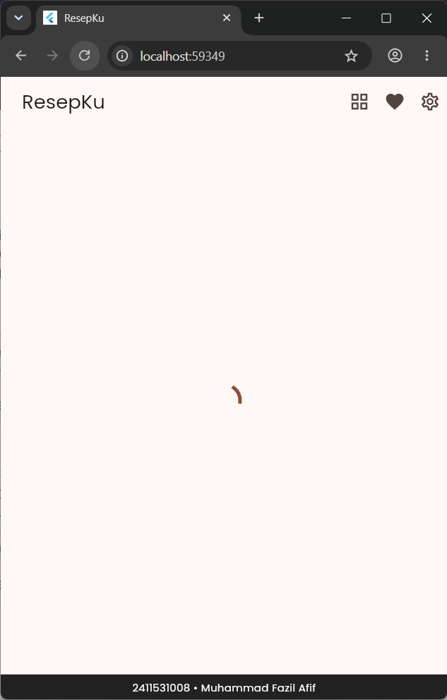
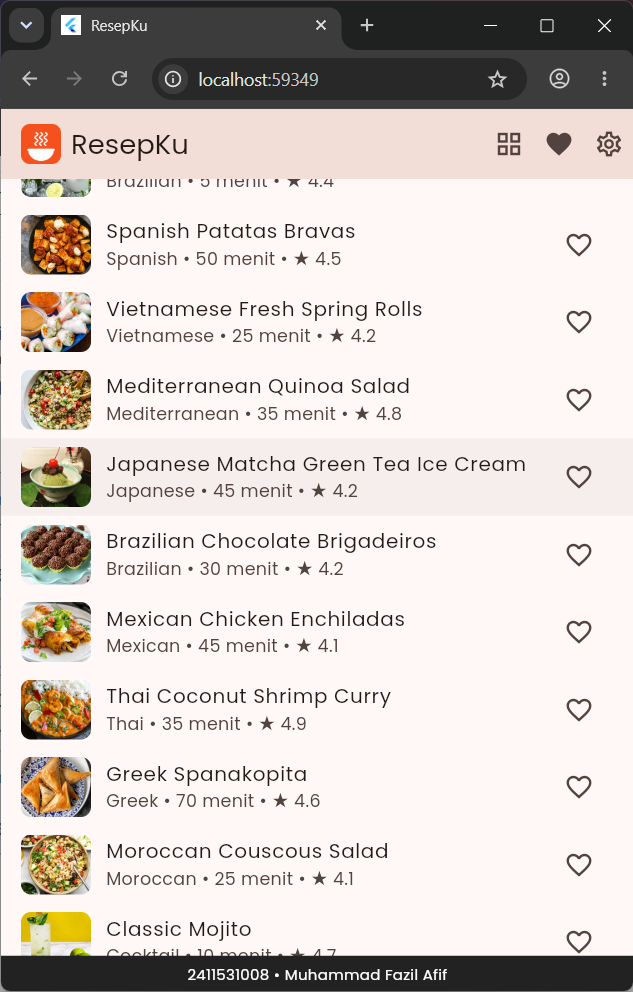
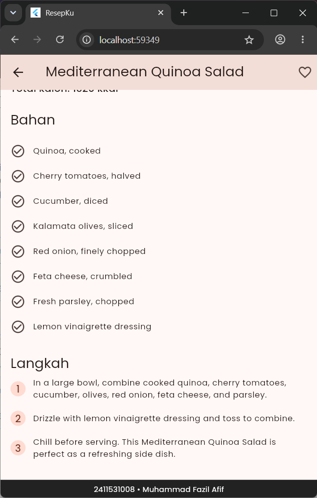
Pengujian dilakukan dengan tiga langkah. Pertama, mode pesawat diaktifkan lalu dilakukan hot restart, dan ErrorView tampil dengan pesan error. Kedua, mode pesawat dimatikan lalu tombol "Coba lagi" ditekan sehingga _reload() membuat Future baru dan daftar resep tampil kembali. Ketiga, daftar ditarik ke bawah (pull-to-refresh) sehingga indikator berputar di atas daftar sementara daftar lama tetap terlihat.
Checkpoint 2: ErrorView saat mode pesawat aktif, dan pull-to-refresh yang sedang berjalan. Footer NIM dan nama terlihat pada setiap screenshot.
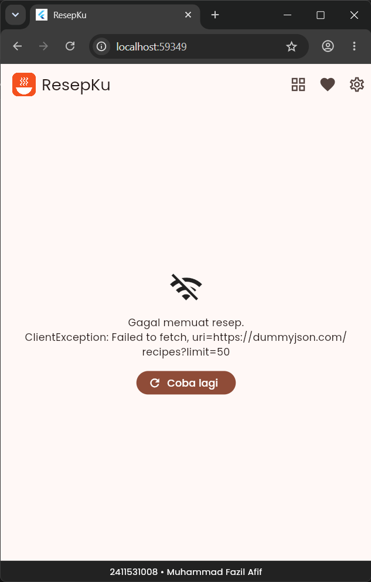
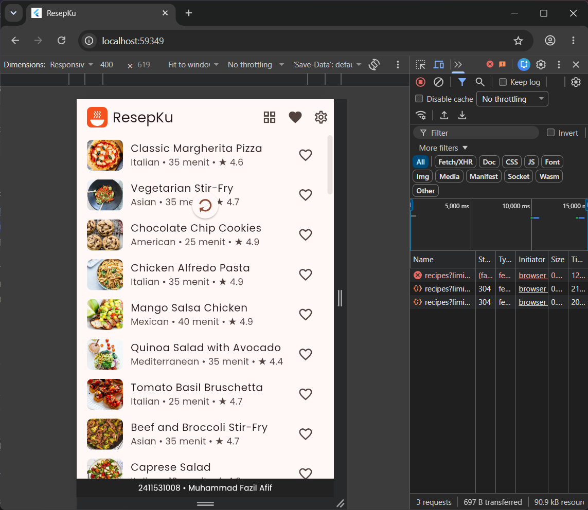
Pada recipe_service.dart ditambahkan method addRecipe tepat sebelum komentar _checkStatus. Method ini mengirim request POST ke /recipes/add dengan header Content-Type: application/json dan body berupa JSON berisi name, cuisine, dan cookTimeMinutes. Respons server diubah kembali menjadi objek Recipe menggunakan Recipe.fromJson.
/// POST /recipes/add — mengirim resep baru.
/// dummyjson hanya menyimulasikan penyimpanan: server mengembalikan
/// data beserta id baru, tetapi resep tidak benar-benar tersimpan.
Future<Recipe> addRecipe({
required String name,
required String cuisine,
required int cookTimeMinutes,
}) async {
final response = await _client
.post(
Uri.parse('$_baseUrl/recipes/add'),
headers: {'Content-Type': 'application/json'},
body: jsonEncode({
'name': name,
'cuisine': cuisine,
'cookTimeMinutes': cookTimeMinutes,
}),
)
.timeout(_timeout);
_checkStatus(response);
return Recipe.fromJson(jsonDecode(response.body) as Map<String, dynamic>);
}_client.post — Request POST untuk mengirim data baru ke server.'Content-Type': 'application/json' — Memberi tahu server bahwa isi body berupa JSON.jsonEncode({...}) — Kebalikan jsonDecode: Map Dart diubah menjadi teks JSON.Recipe.fromJson(...) — Server mengembalikan resep yang dikirim beserta id baru, dan field yang tidak dikirim diisi nilai bawaan oleh fromJson.Dibuat halaman add_recipe_page.dart berupa StatefulWidget berisi form dengan tiga TextFormField (nama resep, cuisine, dan waktu memasak). Seluruh kolom divalidasi oleh _formKey.currentState!.validate() pada method _save sebelum request dikirim.
import 'package:flutter/material.dart';
import 'package:provider/provider.dart';
import 'package:resepku/services/recipe_service.dart';
class AddRecipePage extends StatefulWidget {
const AddRecipePage({super.key});
@override
State<AddRecipePage> createState() => _AddRecipePageState();
}
class _AddRecipePageState extends State<AddRecipePage> {
final _formKey = GlobalKey<FormState>();
final _nameController = TextEditingController();
final _cuisineController = TextEditingController();
final _minutesController = TextEditingController();
bool _saving = false;
@override
void dispose() {
_nameController.dispose();
_cuisineController.dispose();
_minutesController.dispose();
super.dispose();
}
Future<void> _save() async {
if (!_formKey.currentState!.validate()) return;
setState(() => _saving = true);
final service = context.read<RecipeService>();
try {
final created = await service.addRecipe(
name: _nameController.text.trim(),
cuisine: _cuisineController.text.trim(),
cookTimeMinutes: int.parse(_minutesController.text),
);
// Setelah await, halaman bisa saja sudah ditutup
if (!mounted) return;
Navigator.pop(context, created);
} catch (e) {
if (!mounted) return;
setState(() => _saving = false);
ScaffoldMessenger.of(context).showSnackBar(
SnackBar(content: Text('Gagal menyimpan: $e')),
);
}
}
String? _required(String? value) =>
(value == null || value.trim().isEmpty) ? 'Wajib diisi' : null;
@override
Widget build(BuildContext context) {
return Scaffold(
appBar: AppBar(title: const Text('Tambah Resep')),
body: Form(
key: _formKey,
child: ListView(
padding: const EdgeInsets.all(16),
children: [
TextFormField(
controller: _nameController,
decoration: const InputDecoration(labelText: 'Nama resep'),
validator: _required,
),
const SizedBox(height: 12),
TextFormField(
controller: _cuisineController,
decoration:
const InputDecoration(labelText: 'Cuisine, misalnya Indonesian'),
validator: _required,
),
const SizedBox(height: 12),
TextFormField(
controller: _minutesController,
decoration:
const InputDecoration(labelText: 'Waktu memasak (menit)'),
keyboardType: TextInputType.number,
validator: (value) {
final minutes = int.tryParse(value ?? '');
if (minutes == null || minutes <= 0) {
return 'Isi dengan angka lebih dari 0';
}
return null;
},
),
const SizedBox(height: 24),
FilledButton(
onPressed: _saving ? null : _save,
child: _saving
? const SizedBox(
width: 20,
height: 20,
child: CircularProgressIndicator(strokeWidth: 2),
)
: const Text('Simpan'),
),
],
),
),
);
}
}GlobalKey<FormState> — Kunci untuk memanggil validate() pada semua TextFormField sekaligus.validator — Mengembalikan pesan error jika isian tidak valid, atau null jika valid. Kolom waktu memakai int.tryParse dan wajib bernilai lebih dari 0._saving — Selama request berjalan, tombol Simpan dinonaktifkan dan menampilkan indikator kecil agar data tidak terkirim dua kali.context.read sebelum await — Service diambil sebelum menunggu, sehingga context tidak dipakai setelah await.if (!mounted) return; — Setelah await, halaman bisa saja sudah ditutup oleh pengguna.Navigator.pop(context, created) — Menutup form sambil mengembalikan resep hasil POST ke HomePage.dispose() — Seluruh TextEditingController dilepas agar tidak terjadi memory leak.Pada home_page.dart ditambahkan import add_recipe_page.dart, method _openAddPage, dan FloatingActionButton pada Scaffold. Method _openAddPage membuka form dengan Navigator.push<Recipe> dan menunggu hasilnya. Jika form ditutup dengan membawa resep (created != null) dan halaman masih aktif (mounted), SnackBar menampilkan nama dan id baru dari server.
import 'package:resepku/pages/add_recipe_page.dart';
// Di dalam _HomePageState, sebelum @override Widget build
Future<void> _openAddPage() async {
final created = await Navigator.push<Recipe>(
context,
MaterialPageRoute(builder: (context) => const AddRecipePage()),
);
if (created == null || !mounted) return;
ScaffoldMessenger.of(context).showSnackBar(
SnackBar(
content: Text(
'"${created.name}" diterima server dengan id ${created.id}. '
'dummyjson hanya menyimulasikan penyimpanan.',
),
),
);
}
// Pada Scaffold, setelah body:
floatingActionButton: FloatingActionButton(
tooltip: 'Tambah resep',
onPressed: _openAddPage,
child: const Icon(Icons.add),
),Pengujian dilakukan dengan menekan tombol +, lalu menekan Simpan dengan form kosong sehingga pesan "Wajib diisi" muncul dan tidak ada request yang dikirim. Selanjutnya form diisi dengan nama Rendang, cuisine Indonesian, dan waktu 180, lalu Simpan ditekan sehingga form tertutup dan SnackBar menampilkan id dari server. Ketika daftar di-refresh, Rendang tidak muncul karena dummyjson hanya menyimulasikan penyimpanan.
Checkpoint 3: form dengan pesan validasi, dan SnackBar berisi id dari server setelah resep dikirim. Footer NIM dan nama terlihat pada setiap screenshot.
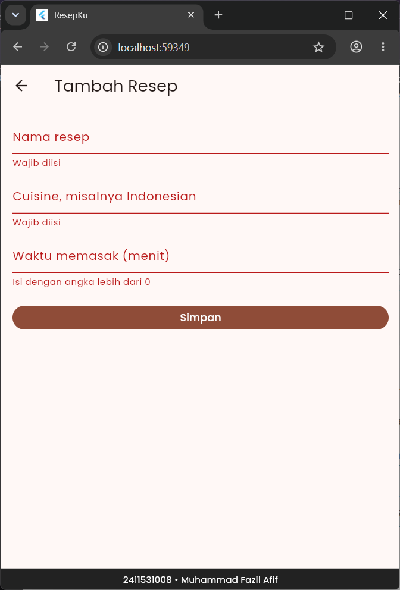
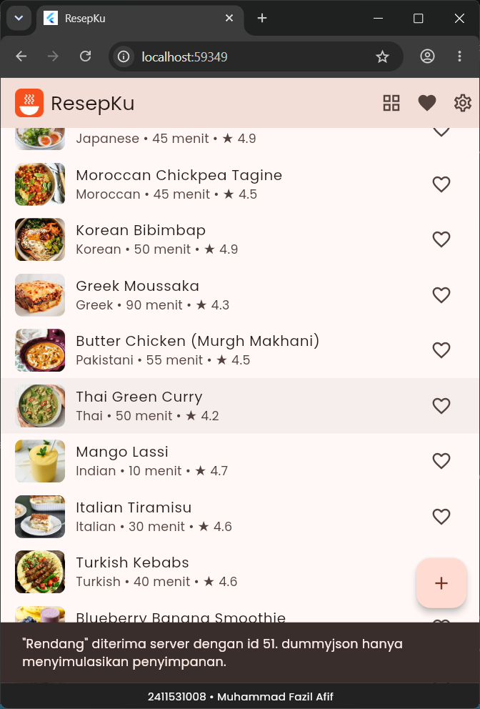
Setelah aplikasi dihentikan dan dijalankan kembali, dilakukan pengujian terhadap seluruh fitur Praktikum 6 sampai 8 dengan data dari server menggunakan tujuh skenario berikut.
| No | Skenario | Hasil yang Diharapkan | Sesuai? |
|---|---|---|---|
| 1 | Buka aplikasi | Indikator loading, lalu 50 resep dari server | ✓ |
| 2 | Tandai dua resep sebagai favorit, lalu tarik untuk refresh | Ikon hati kedua resep tetap merah dan badge tetap 2 | ✓ |
| 3 | Tekan tombol grid, lalu kembali ke list | Tidak ada indikator loading baru | ✓ |
| 4 | Buka detail salah satu resep | Foto, porsi, bahan, dan langkah memasak tampil | ✓ |
| 5 | Mode pesawat, lalu hot restart | ErrorView dengan tombol "Coba lagi" |
✓ |
| 6 | Matikan mode pesawat, tekan "Coba lagi" | Daftar resep tampil kembali | ✓ |
| 7 | Kirim resep baru melalui tombol + | SnackBar berisi id dari server |
✓ |
Setiap refresh membuat objek Recipe baru dari JSON, tetapi FavoriteProvider.isFavorite() membandingkan resep berdasarkan id, bukan berdasarkan objeknya (_items.any((r) => r.id == recipe.id)). Objek baru hasil refresh memiliki id yang sama dengan resep yang sudah difavoritkan, sehingga tetap dikenali sebagai favorit. Jika yang dibandingkan adalah objeknya, objek baru dianggap berbeda dari objek lama sehingga ikon hati akan kembali kosong. Selain itu, daftar favorit disimpan di FavoriteProvider yang berada di atas MaterialApp, jadi tidak ikut hilang ketika FutureBuilder memuat ulang data.
Menekan tombol grid memanggil setState sehingga build() dijalankan ulang, tetapi FutureBuilder memakai _recipesFuture yang sama, yaitu Future yang dibuat satu kali di initState dan sudah selesai. Karena objek Future-nya tidak berganti, FutureBuilder tidak memulai request baru dan hanya menampilkan data yang sudah ada dengan tampilan list atau grid yang berbeda. Jika future ditulis langsung di dalam build(), setiap build() akan membuat Future baru sehingga FutureBuilder kembali ke kondisi waiting dan request ke server terkirim ulang setiap tombol ditekan. Hal ini memunculkan indikator loading lagi dan memboroskan kuota serta waktu.
Keuntungan pertama adalah kode jaringan menjadi terpusat dan terpisah dari tampilan: base URL, timeout, pengecekan status code, dan konversi JSON hanya ditulis sekali di RecipeService, sehingga HomePage, SearchPage, dan AddRecipePage cukup memanggil method service dan perubahan di server cukup diubah di satu tempat. Keuntungan kedua adalah kemudahan pengujian: http.Client dapat diganti dari luar dengan MockClient sehingga service dapat diuji tanpa internet dan tanpa menjalankan widget, seperti pada Latihan 3.
Hal ini terjadi karena dummyjson hanya menyimulasikan penyimpanan: server mengembalikan data beserta id baru seolah-olah resep tersimpan, tetapi tidak benar-benar menulisnya ke database, sehingga GET /recipes berikutnya tetap menghasilkan 50 resep yang sama. Pada server sungguhan, data yang berhasil ditambahkan benar-benar disimpan sehingga aplikasi biasanya menampilkannya dengan memuat ulang daftar dari server setelah POST berhasil (misalnya memanggil _reload()), atau dengan langsung menambahkan resep yang dikembalikan server ke daftar lokal sebelum atau tanpa memuat ulang.
Baris ini mencegah penggunaan setState, Navigator, atau ScaffoldMessenger pada halaman yang sudah tidak berada di widget tree. Skenarionya, pengguna menekan Simpan lalu request berjalan (bisa sampai 10 detik karena timeout), dan sebelum selesai pengguna menekan tombol kembali sehingga halaman ditutup. Ketika await selesai, tanpa pengecekan mounted kode akan memanggil Navigator.pop(context, created) atau setState pada halaman yang sudah dibuang, yang dapat menimbulkan error setState() called after dispose() atau bahkan menutup halaman lain yang sedang tampil.
Latihan ini menambahkan halaman pencarian yang dibuka dari ikon kaca pembesar di AppBar Home. Pengguna mengetik kata kunci, menekan Enter, lalu hasil ditampilkan dengan FutureBuilder.
Ditambahkan method searchRecipes(String query) yang memanggil GET /recipes/search?q=.... Alamat dibuat dengan Uri.parse(...).replace(queryParameters: {'q': query}) agar spasi dan karakter khusus pada kata kunci di-encode dengan benar. Pengolahan respons sama seperti fetchRecipes.
/// GET /recipes/search?q=... — mencari resep berdasarkan kata kunci.
Future<List<Recipe>> searchRecipes(String query) async {
// replace(queryParameters) meng-encode spasi dan karakter khusus
final uri = Uri.parse('$_baseUrl/recipes/search')
.replace(queryParameters: {'q': query});
final response = await _client.get(uri).timeout(_timeout);
_checkStatus(response);
final body = jsonDecode(response.body) as Map<String, dynamic>;
final list = body['recipes'] as List<dynamic>;
return list
.map((item) => Recipe.fromJson(item as Map<String, dynamic>))
.toList();
}SearchPage dibuat sebagai StatefulWidget dengan TextField pada AppBar. Hasil pencarian disimpan pada field Future<List<Recipe>>? _resultsFuture yang bernilai null sebelum pengguna mencari, sehingga pada kondisi ini ditampilkan teks petunjuk. Pada onSubmitted, method _search membuat Future baru di dalam setState. FutureBuilder menangani tiga kondisi: indikator loading, ErrorView dengan tombol "Coba lagi" yang mengulang pencarian, dan pesan khusus "Tidak ada resep untuk ..." jika hasil kosong. Daftar hasil memakai kembali RecipeTile.
import 'package:flutter/material.dart';
import 'package:provider/provider.dart';
import 'package:resepku/models/recipe.dart';
import 'package:resepku/services/recipe_service.dart';
import 'package:resepku/widgets/error_view.dart';
import 'package:resepku/widgets/recipe_tile.dart';
class SearchPage extends StatefulWidget {
const SearchPage({super.key});
@override
State<SearchPage> createState() => _SearchPageState();
}
class _SearchPageState extends State<SearchPage> {
final _controller = TextEditingController();
Future<List<Recipe>>? _resultsFuture; // null sebelum user mencari
String _query = '';
@override
void dispose() {
_controller.dispose();
super.dispose();
}
void _search(String query) {
final keyword = query.trim();
if (keyword.isEmpty) return;
// Future baru dibuat di dalam setState saat user menekan Enter
setState(() {
_query = keyword;
_resultsFuture = context.read<RecipeService>().searchRecipes(keyword);
});
}
@override
Widget build(BuildContext context) {
return Scaffold(
appBar: AppBar(
title: TextField(
controller: _controller,
autofocus: true,
textInputAction: TextInputAction.search,
decoration: const InputDecoration(
hintText: 'Cari resep, misalnya pasta',
border: InputBorder.none,
),
onSubmitted: _search,
),
),
body: _resultsFuture == null
? const Center(child: Text('Ketik kata kunci lalu tekan Enter.'))
: FutureBuilder<List<Recipe>>(
future: _resultsFuture,
builder: (context, snapshot) {
if (snapshot.connectionState == ConnectionState.waiting) {
return const Center(child: CircularProgressIndicator());
}
if (snapshot.hasError) {
return ErrorView(
message: 'Gagal mencari resep.\n${snapshot.error}',
onRetry: () => _search(_query),
);
}
final results = snapshot.data ?? [];
if (results.isEmpty) {
return Center(
child: Text('Tidak ada resep untuk "$_query".'),
);
}
return ListView.builder(
itemCount: results.length,
itemBuilder: (context, index) =>
RecipeTile(recipe: results[index]),
);
},
),
);
}
}Pada actions milik AppBar di HomePage ditambahkan IconButton berikon Icons.search yang membuka SearchPage melalui Navigator.push.
import 'package:resepku/pages/search_page.dart';
// ...
actions: [
IconButton(
tooltip: _isGrid ? 'Tampilan list' : 'Tampilan grid',
icon: Icon(_isGrid ? Icons.view_list : Icons.grid_view),
onPressed: () => setState(() => _isGrid = !_isGrid),
),
IconButton(
tooltip: 'Cari resep',
icon: const Icon(Icons.search),
onPressed: () => Navigator.push(
context,
MaterialPageRoute(builder: (context) => const SearchPage()),
),
),
// ... tombol Pengaturan dan FavoriteBadgeButton tetap
],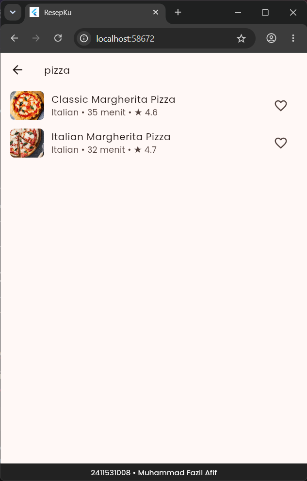
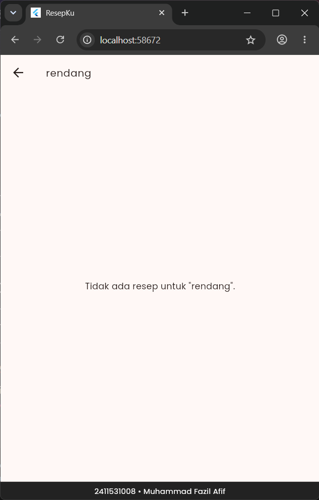
Latihan ini menambahkan PopupMenuButton pada halaman detail untuk mengubah nama resep (PUT) dan menghapus resep (DELETE). Karena halaman detail memakai SliverAppBar (Latihan 3 Praktikum 7), menu diletakkan pada actions milik SliverAppBar, setelah tombol favorit.
Pada RecipeService ditambahkan dua method. updateRecipe mengirim request PUT ke /recipes/{id} dengan body JSON berisi name, lalu mengembalikan Recipe dari respons server. deleteRecipe mengirim request DELETE ke /recipes/{id} dan mengembalikan true jika respons berisi isDeleted: true.
/// PUT /recipes/{id} — mengubah nama resep (disimulasikan dummyjson).
Future<Recipe> updateRecipe({required int id, required String name}) async {
final response = await _client
.put(
Uri.parse('$_baseUrl/recipes/$id'),
headers: {'Content-Type': 'application/json'},
body: jsonEncode({'name': name}),
)
.timeout(_timeout);
_checkStatus(response);
return Recipe.fromJson(jsonDecode(response.body) as Map<String, dynamic>);
}
/// DELETE /recipes/{id} — true jika server menjawab isDeleted: true.
Future<bool> deleteRecipe(int id) async {
final response = await _client
.delete(Uri.parse('$_baseUrl/recipes/$id'))
.timeout(_timeout);
_checkStatus(response);
final body = jsonDecode(response.body) as Map<String, dynamic>;
return body['isDeleted'] == true;
}PopupMenuButton<String> ditambahkan pada actions setelah IconButton favorit. Menu berisi dua PopupMenuItem, yaitu "Ubah nama" dengan value: 'rename' dan "Hapus" dengan value: 'delete'. Pada onSelected, nilai yang dipilih menentukan method yang dipanggil: _renameRecipe() atau _deleteRecipe().
SliverAppBar(
pinned: true,
expandedHeight: 260,
actions: [
IconButton(
icon: Icon(isFavorite ? Icons.favorite : Icons.favorite_border),
onPressed: () => context.read<FavoriteProvider>().toggle(recipe),
),
// Menu ubah dan hapus, diletakkan setelah tombol favorit
PopupMenuButton<String>(
onSelected: (value) {
if (value == 'rename') _renameRecipe();
if (value == 'delete') _deleteRecipe();
},
itemBuilder: (context) => const [
PopupMenuItem(value: 'rename', child: Text('Ubah nama')),
PopupMenuItem(value: 'delete', child: Text('Hapus')),
],
),
],
// ... flexibleSpace tidak berubah
),Method _renameRecipe menampilkan AlertDialog berisi TextField yang sudah terisi nama resep saat ini. Service diambil dengan context.read sebelum await. Setelah dialog ditutup, jika nama baru tidak kosong dan halaman masih aktif, dikirim request PUT dan nama dari respons server ditampilkan pada SnackBar. Pemeriksaan mounted dilakukan setelah setiap await. Nama pada FlexibleSpaceBar tidak ikut berubah karena widget.recipe tidak diganti dan dummyjson hanya menyimulasikan perubahan, sehingga nama baru cukup ditampilkan di SnackBar.
// Di dalam _DetailPageState
Future<void> _renameRecipe() async {
final service = context.read<RecipeService>(); // diambil sebelum await
final controller = TextEditingController(text: widget.recipe.name);
final newName = await showDialog<String>(
context: context,
builder: (dialogContext) => AlertDialog(
title: const Text('Ubah nama resep'),
content: TextField(
controller: controller,
autofocus: true,
decoration: const InputDecoration(labelText: 'Nama baru'),
),
actions: [
TextButton(
onPressed: () => Navigator.pop(dialogContext),
child: const Text('Batal'),
),
FilledButton(
onPressed: () => Navigator.pop(dialogContext, controller.text.trim()),
child: const Text('Simpan'),
),
],
),
);
if (newName == null || newName.isEmpty || !mounted) return;
try {
final updated = await service.updateRecipe(
id: widget.recipe.id,
name: newName,
);
if (!mounted) return;
ScaffoldMessenger.of(context).showSnackBar(
SnackBar(content: Text('Nama dari server: ${updated.name}')),
);
} catch (e) {
if (!mounted) return;
ScaffoldMessenger.of(context).showSnackBar(
SnackBar(content: Text('Gagal mengubah: $e')),
);
}
}Method _deleteRecipe menampilkan dialog konfirmasi yang mengembalikan true atau false. Jika dikonfirmasi, dikirim request DELETE. Apabila hasilnya true (server menjawab isDeleted: true), SnackBar ditampilkan dan halaman detail ditutup dengan Navigator.pop(context). Jika false atau terjadi error, SnackBar menampilkan pesan yang sesuai dan halaman tetap terbuka.
Future<void> _deleteRecipe() async {
final service = context.read<RecipeService>();
final confirmed = await showDialog<bool>(
context: context,
builder: (dialogContext) => AlertDialog(
title: const Text('Hapus resep?'),
content: Text('"${widget.recipe.name}" akan dihapus dari server.'),
actions: [
TextButton(
onPressed: () => Navigator.pop(dialogContext, false),
child: const Text('Batal'),
),
FilledButton(
onPressed: () => Navigator.pop(dialogContext, true),
child: const Text('Hapus'),
),
],
),
);
if (confirmed != true || !mounted) return;
try {
final deleted = await service.deleteRecipe(widget.recipe.id);
if (!mounted) return;
if (deleted) {
ScaffoldMessenger.of(context).showSnackBar(
SnackBar(content: Text('"${widget.recipe.name}" berhasil dihapus.')),
);
Navigator.pop(context); // tutup halaman detail
} else {
ScaffoldMessenger.of(context).showSnackBar(
const SnackBar(content: Text('Server tidak menghapus resep.')),
);
}
} catch (e) {
if (!mounted) return;
ScaffoldMessenger.of(context).showSnackBar(
SnackBar(content: Text('Gagal menghapus: $e')),
);
}
}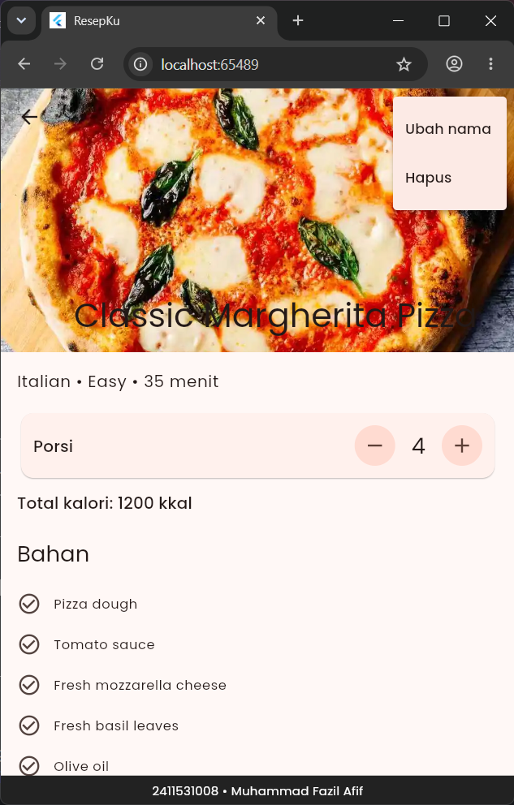
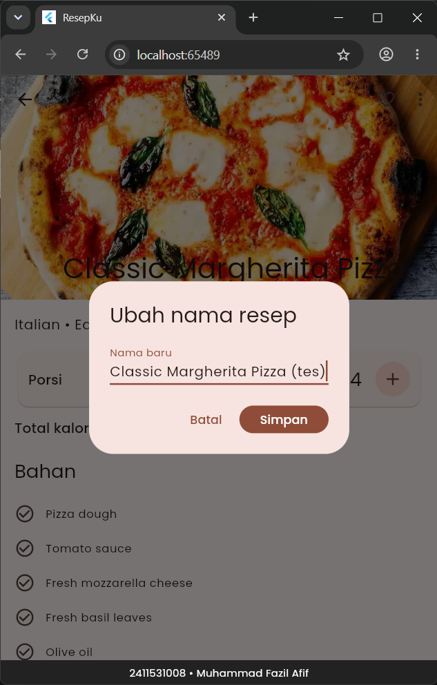
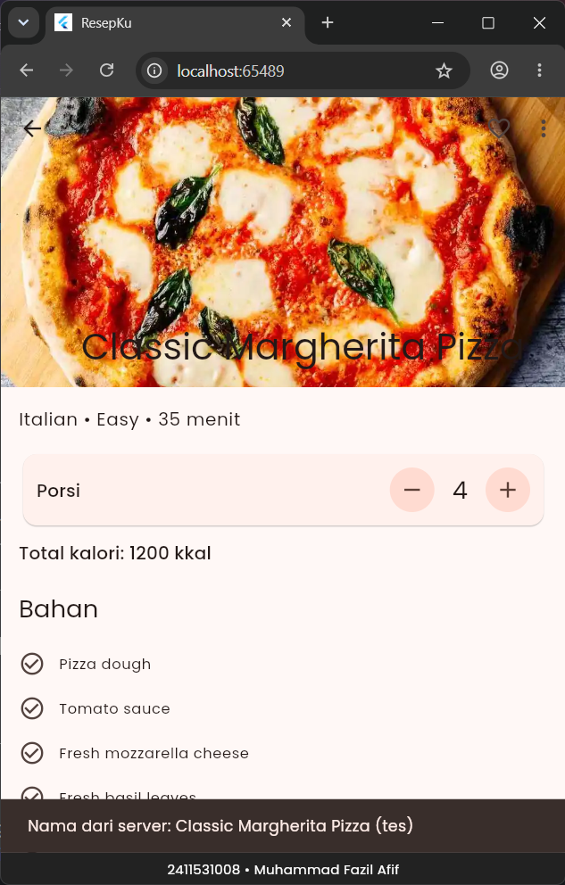
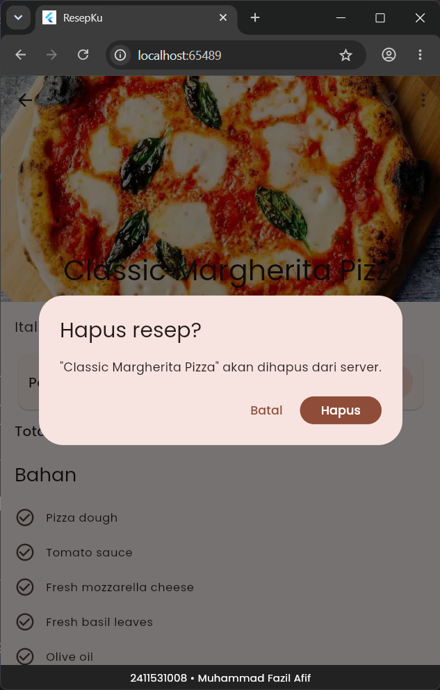
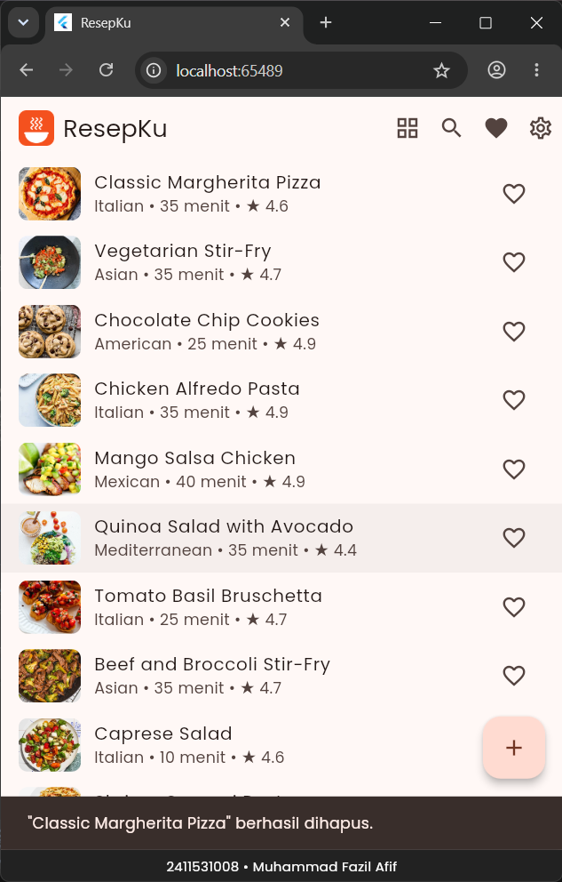
Latihan bonus ini membuat file test/recipe_service_test.dart untuk menguji Recipe.fromJson dan RecipeService.fetchRecipes menggunakan MockClient dari package:http/testing.dart, sehingga pengujian tidak membutuhkan internet.
Pengujian pertama memastikan rating bernilai 5 (int) terbaca sebagai 5.0 bertipe double, dengan expect(recipe.rating, isA<double>()). Pengujian kedua memberi JSON yang hanya berisi id dan name, lalu memastikan field lain terisi nilai bawaan: '-' untuk cuisine dan difficulty, 0 untuk waktu dan kalori, 1 untuk porsi, string kosong untuk gambar, serta list kosong untuk bahan dan langkah.
import 'dart:convert';
import 'package:flutter_test/flutter_test.dart';
import 'package:http/http.dart' as http;
import 'package:http/testing.dart';
import 'package:resepku/models/recipe.dart';
import 'package:resepku/services/recipe_service.dart';
void main() {
group('Recipe.fromJson', () {
test('membaca rating 5 (int) sebagai 5.0 (double)', () {
final recipe = Recipe.fromJson({
'id': 1,
'name': 'Nasi Goreng',
'rating': 5, // int, bukan double
});
expect(recipe.rating, 5.0);
expect(recipe.rating, isA<double>());
});
test('memberi nilai bawaan untuk field yang tidak ada', () {
final recipe = Recipe.fromJson({'id': 2, 'name': 'Soto'});
expect(recipe.cuisine, '-');
expect(recipe.difficulty, '-');
expect(recipe.prepTimeMinutes, 0);
expect(recipe.cookTimeMinutes, 0);
expect(recipe.servings, 1);
expect(recipe.caloriesPerServing, 0);
expect(recipe.rating, 0.0);
expect(recipe.image, '');
expect(recipe.ingredients, isEmpty);
expect(recipe.instructions, isEmpty);
});
});
// ... group RecipeService.fetchRecipes (lihat langkah B)
}MockClient menggantikan http.Client sehingga respons dapat dibuat palsu tanpa menghubungi server. Pengujian pertama memberi respons berstatus 200 berisi dua resep dan memastikan fetchRecipes mengembalikan List<Recipe> yang sesuai. Pengujian kedua memberi respons berstatus 404 dan memastikan fetchRecipes melempar RecipeServiceException menggunakan throwsA(isA<RecipeServiceException>()). Kedua group ditempatkan di dalam main() pada file yang sama, lalu pengujian dijalankan dengan perintah berikut.
group('RecipeService.fetchRecipes', () {
test('mengembalikan List<Recipe> dari respons palsu', () async {
// MockClient menggantikan http.Client, sehingga tanpa internet
final client = MockClient((request) async {
expect(request.url.path, '/recipes');
return http.Response(
jsonEncode({
'recipes': [
{'id': 1, 'name': 'Pizza', 'rating': 4.6},
{'id': 2, 'name': 'Stir-Fry', 'rating': 5},
],
'total': 2,
'skip': 0,
'limit': 50,
}),
200,
);
});
final service = RecipeService(client: client);
final recipes = await service.fetchRecipes();
expect(recipes, hasLength(2));
expect(recipes.first.name, 'Pizza');
expect(recipes.last.rating, 5.0);
});
test('melempar RecipeServiceException jika status 404', () async {
final client = MockClient(
(request) async => http.Response('Not Found', 404),
);
final service = RecipeService(client: client);
expect(service.fetchRecipes(), throwsA(isA<RecipeServiceException>()));
});
});flutter test test/recipe_service_test.dart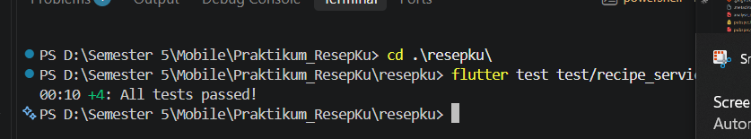
Berdasarkan praktikum yang telah dilakukan, dapat disimpulkan bahwa data dari REST API dibaca dalam format JSON dan diubah menjadi objek model melalui fromJson dengan memperhatikan tipe data dan nilai bawaan untuk field yang tidak ada.
Seluruh komunikasi dengan server sebaiknya dipusatkan dalam class service seperti RecipeService agar kode lebih rapi dan mudah diuji, sedangkan tampilannya ditangani FutureBuilder dengan tiga kondisi yaitu loading, error, dan data.
Future harus dibuat satu kali di initState dan hanya dibuat ulang melalui setState ketika dibutuhkan, agar request tidak terkirim berulang setiap build() dijalankan.
Request POST, PUT, dan DELETE perlu diikuti penanganan hasil dan kegagalan serta pengecekan mounted setelah await, dan pada dummyjson ketiganya hanya simulasi sehingga data di server tidak benar-benar berubah.